ACC-SINV- naming series. Before saving, change Series to INFY-SINV-.YYYY.- so it follows the company's numbering (INFY-SINV-2026-00038 and so on). The same applies to the other INFY- series.1Landed cost: old value, new value and the charges added
Import charges (freight, insurance, customs duty, clearing) are added to the stock value with a Landed Cost Voucher. You can see the purchase value, the landed cost added, and the unit cost before and after in three places.
On the Landed Cost Voucher
- Search Landed Cost Voucher in the search bar and open INFY-LCV-2026-00001.
- The Purchase Receipts table shows the receipt being costed (INFY-PR-2026-00005) and its value.
- Scroll to Applicable Charges: each charge, its expense account and amount (freight 420.000, insurance 60.000, duty 524.500, clearing 85.000).
- Total Taxes and Charges is the landed cost added: OMR 1,089.500. Distribute Charges Based On = Amount shares it by item value.
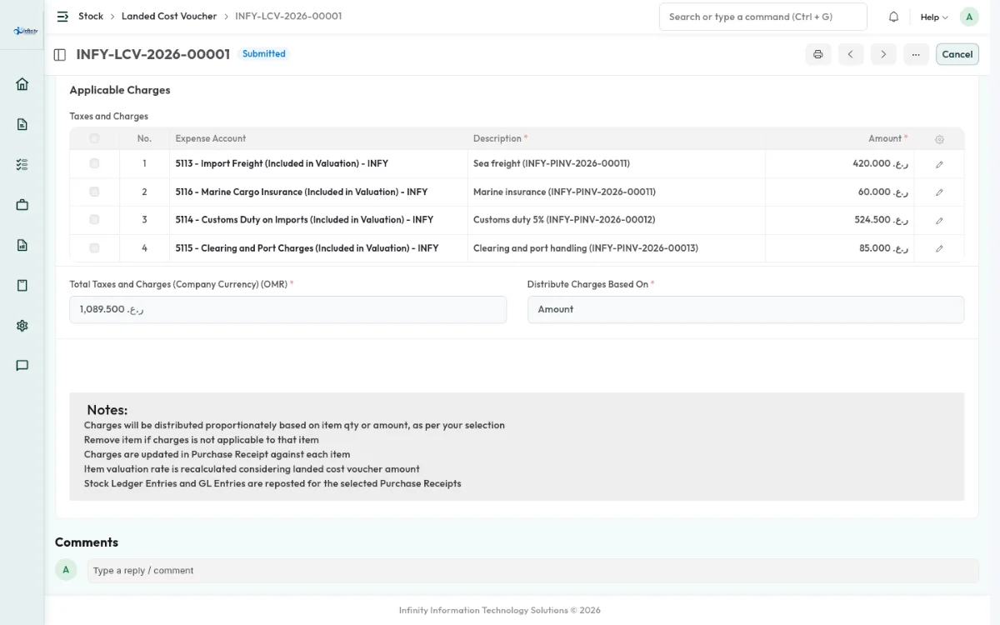
In the Landed Cost Analysis report (one receipt)
- Search Landed Cost Analysis and open the report (or go to
/app/query-report/Landed Cost Analysis). - Filters: Company, From / To date, and optionally Purchase Receipt, Landed Cost Voucher or Item.
- Pick Purchase Receipt INFY-PR-2026-00005. The row shows the Purchase Value, Landed Cost Added, New Total Value, Old Unit Cost and New Unit Cost.
| DEMO-CMP-15 · 5 units | OMR |
|---|---|
| Purchase value (USD 26,000 × 0.385) | 10,010.000 |
| Landed cost added | 1,089.500 |
| New total value | 11,099.500 |
| Unit cost: old → new | 2,002.000 → 2,219.900 |
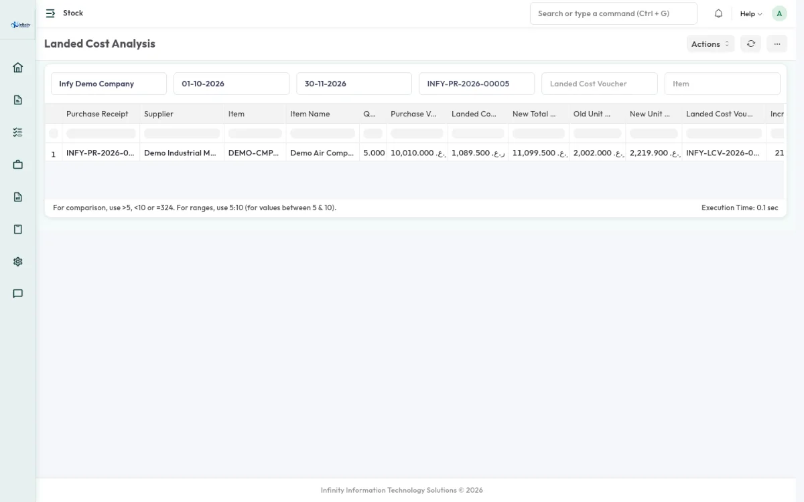
All receipts at once
- Clear the Purchase Receipt filter to list every receipt line that received landed cost.
- The Landed Cost Added column totals OMR 4,220.030 for the period, across the four landed cost vouchers.
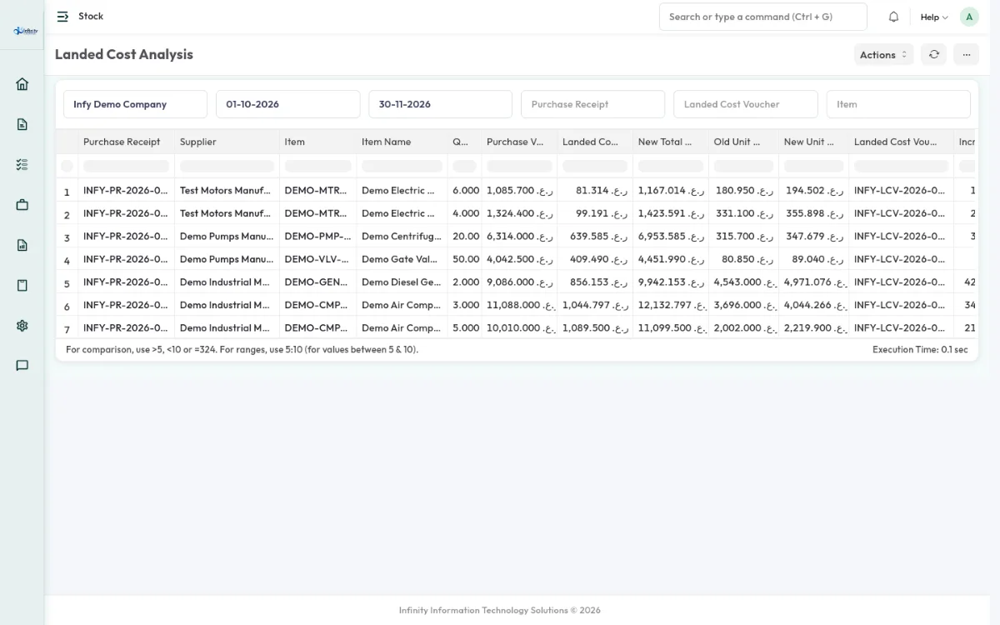
In the Stock Ledger
- Open the Stock Ledger report and filter Warehouse = Stores - INFY and Item = DEMO-CMP-15.
- The purchase receipt line on 14-11-2026 shows an Incoming Rate of 2,219.900: the unit cost after landed cost.
- Later issues (stock entries, deliveries) go out at that rate, so the cost of sales includes the import charges.
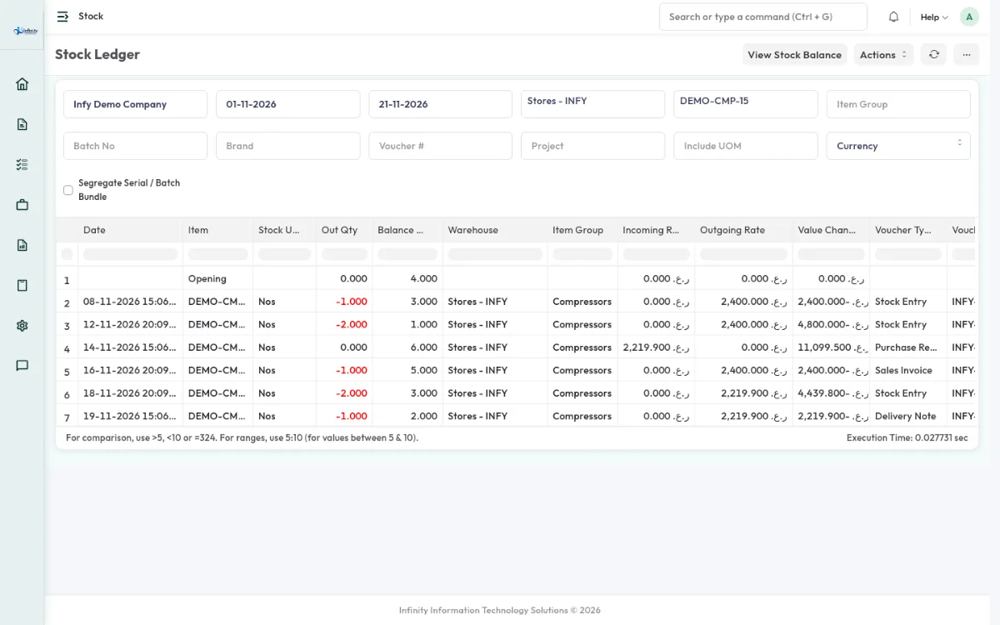
2VAT setup: prices, item tax and default templates
The selling price comes from the item's price list, the VAT rate from the item's tax template, and the VAT row on every document from the default taxes template. Nothing is typed on the invoice.
Where the sales price is set
- Search Item Price and filter Item Code = DEMO-CMP-15.
- Standard Selling (OMR 3,150.000) fills the rate on quotations, sales orders and sales invoices.
- Standard Buying (OMR 2,400.000) fills the rate on purchase orders and invoices. Edit the rate here to change the price.
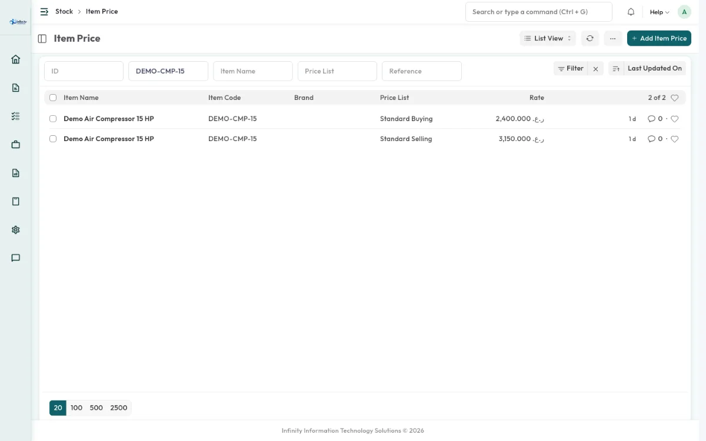
How VAT is tied to the item
- Open the item (Item → DEMO-CMP-15) and go to the Tax tab.
- Row 1: VAT 5% Sales - INFY with no tax category, used on sales (posts to 2320 Output VAT 5%).
- Row 2: VAT 5% Purchase - INFY with tax category Purchase VAT, used when buying from suppliers in that category (posts to 1510 Input VAT 5%).
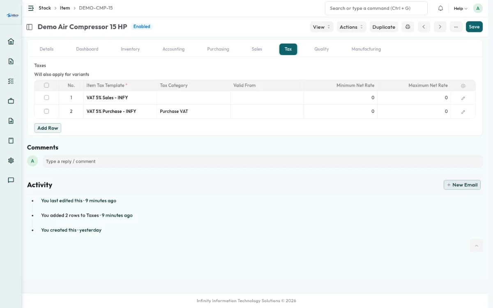
The Item Tax Template itself
- Search Item Tax Template and open VAT 5% Sales - INFY.
- Tax Rates: account 2320 - Output VAT 5% at 5%. The purchase template has 1510 - Input VAT 5% at 5%.
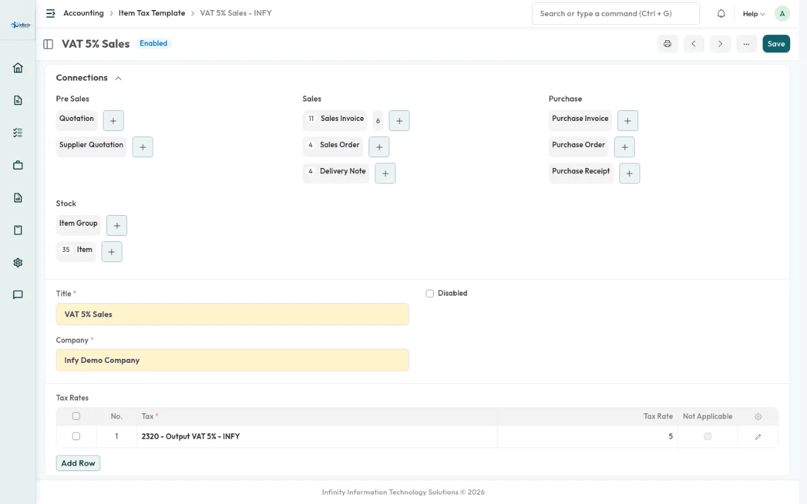
Default sales and purchase templates
- Search Sales Taxes and Charges Template and open Oman VAT 5% - INFY: Default is ticked, one row On Net Total → 2320 Output VAT 5%, rate 5.
- Search Purchase Taxes and Charges Template and open Oman VAT 5% Input - INFY: Default, On Net Total → 1510 Input VAT 5%, rate 5.
- Because they are default, every new sales or purchase document gets the VAT row automatically.
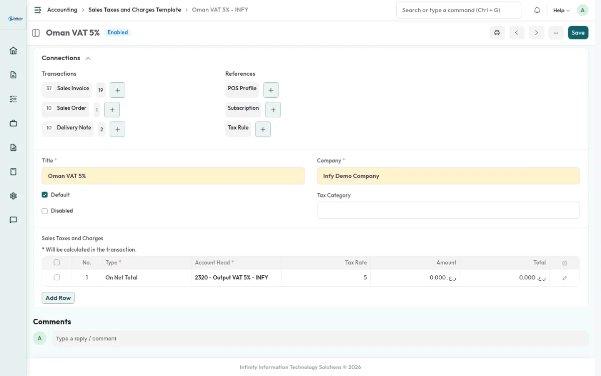
VAT on a sales invoice
- Open a sales invoice, for example INFY-SINV-2026-00034, and scroll to Taxes and Charges.
- Sales Taxes and Charges Template = Oman VAT 5% was filled automatically.
- The row On Net Total · 2320 - Output VAT 5% · 5 shows the VAT amount (167.100 on 3,342.000) and the total.
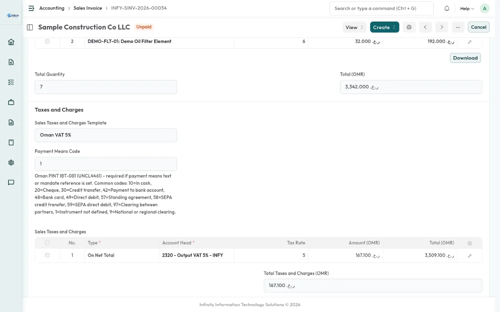
3VAT Reconciliation and VAT Summary by Month
Two reports check the VAT on every invoice against the VAT ledgers (2320 Output, 1510 Input, 2330 Reverse Charge).
VAT Reconciliation
- Type VAT Reconciliation in the search bar, or go to
/app/query-report/VAT Reconciliation. - Filters: Company, From Date and To Date.
- One row per invoice: month, date, invoice, party, type, taxable amount, Output VAT, Input VAT, RCM VAT and net.
- The last rows compare the totals with the GL balance; the DIFFERENCE row should be 0.000.
| Totals (1 Oct – 30 Nov 2026) | OMR |
|---|---|
| Output VAT · 2320 | 3,399.100 |
| Input VAT · 1510 | 6,710.080 |
| Reverse charge · 2330 | 2,147.530 |
| Net VAT (refund position) | −1,163.450 |
| Difference vs GL | 0.000 |
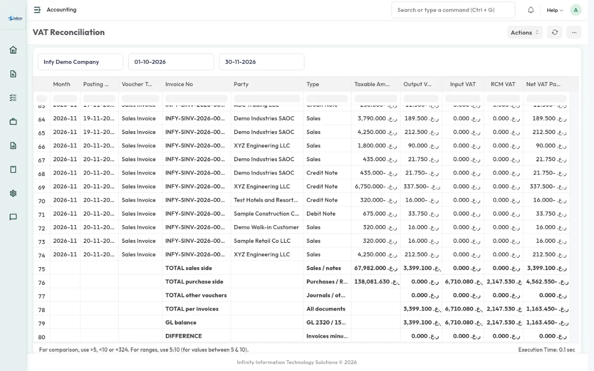
VAT Summary by Month
- Type VAT Summary by Month in the search bar, or go to
/app/query-report/VAT Summary by Month. - Same filters: Company, From Date, To Date.
- One row per month: sales taxable, credit notes, output VAT, purchases taxable, input VAT, RCM VAT, net, and the GL columns beside them. Use it for the monthly VAT return.
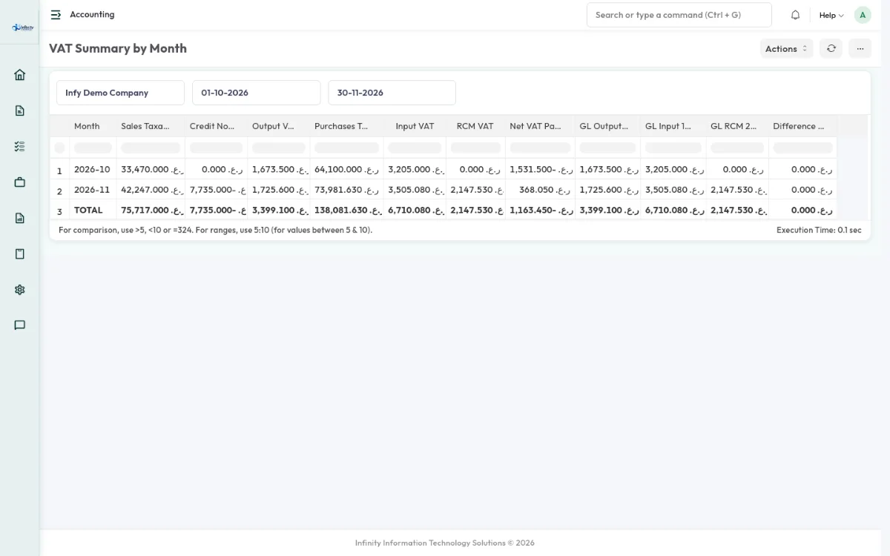
4Ageing: receivables, payables and stock
Accounts Receivable and Accounts Payable age every open invoice. Set the filters once; the report remembers them.
Accounts Receivable
- Open Accounting → Accounts Receivable.
- Set Report Date = 21-11-2026, Ageing Based On = Posting Date and Ageing Range = 30, 40, 120.
- The chart and the columns Age (Days), 0-30, 31-40, 41-120, 121-Above show each invoice's age.
- For one line per customer, open Accounts Receivable Summary with the same filters.
| Bucket | OMR |
|---|---|
| 0-30 | 28,369.000 |
| 31-40 | 336.000 |
| 41-120 | 1,680.000 |
| 121-Above | 0.000 |
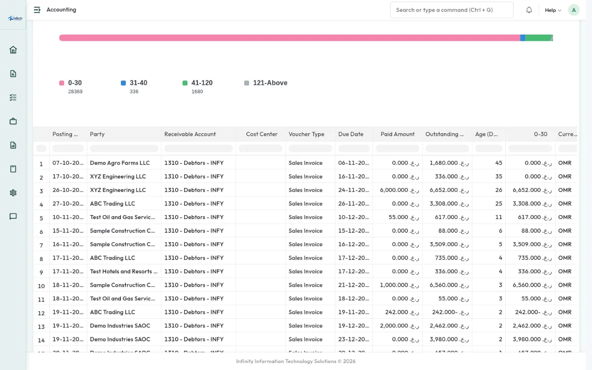
Accounts Payable
- Open Accounting → Accounts Payable.
- Use the same filters: Ageing Based On = Posting Date, Ageing Range = 30, 40, 120.
- Buckets: 0-30 = 39,086.100, 31-40 = 3,780.000, 41-120 = 178.000. USD bills appear in OMR.
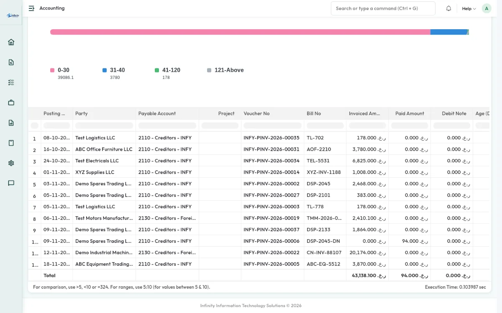
Stock Ageing
- Open Stock → Stock Ageing.
- Filters: Company, As On Date, optionally Warehouse, Item or Brand. The default ranges are 30, 60, 90.
- Each item shows its Average Age and the quantity and value in each age band.
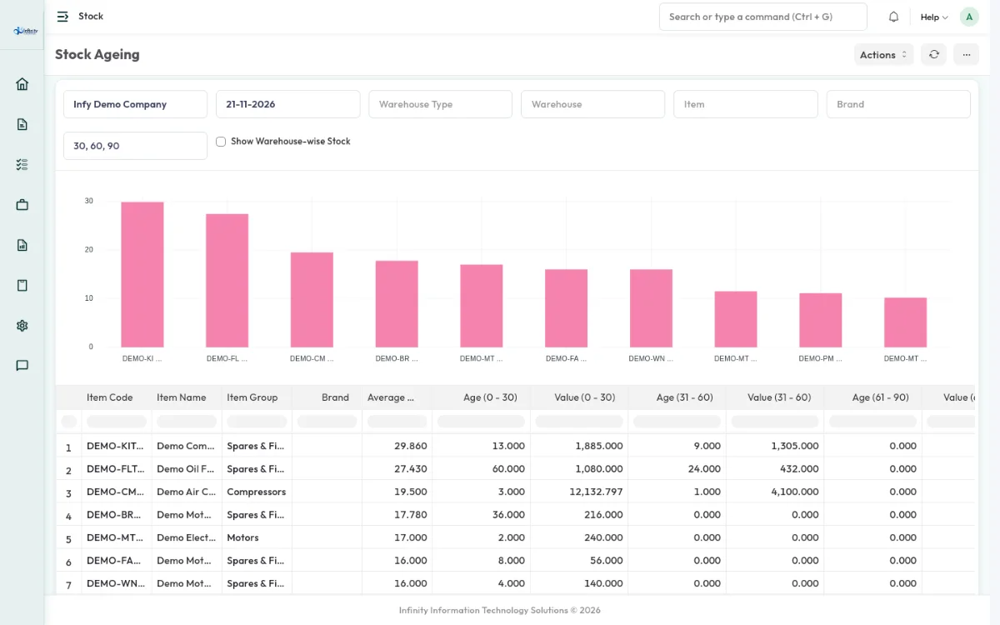
5Manufacturing: BOM and work order
Manufacturing is in the sidebar between Stock and Support. The compressor package is built from a bill of materials with a work order.
Bill of materials and its cost
- Open Manufacturing → BOM → BOM-DEMO-PKG-15-001.
- Production Item tab: the item DEMO-PKG-15 and the raw materials with qty and rate.
- Costing tab: Raw Material Cost 3,135.920 + Operating Cost 96.000 = Total Cost 3,231.920 per package. Use Update Cost to refresh from current rates.
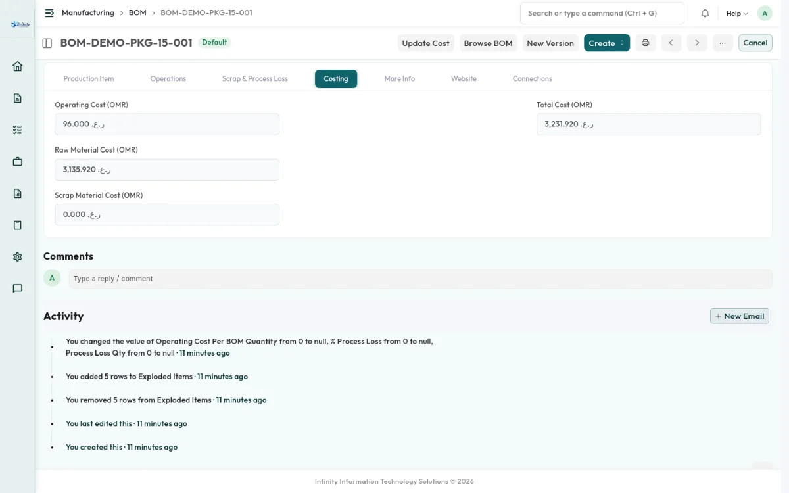
Work order
- Open Manufacturing → Work Order → INFY-WO-2026-00001.
- It shows the item, BOM, Qty To Manufacture 2, Material Transferred 2 and Manufactured Qty 2, and the required items with transferred and consumed quantities.
- From the work order, Start creates the material transfer and Finish creates the Manufacture stock entry that values the finished goods (OMR 3,363.949 per package).
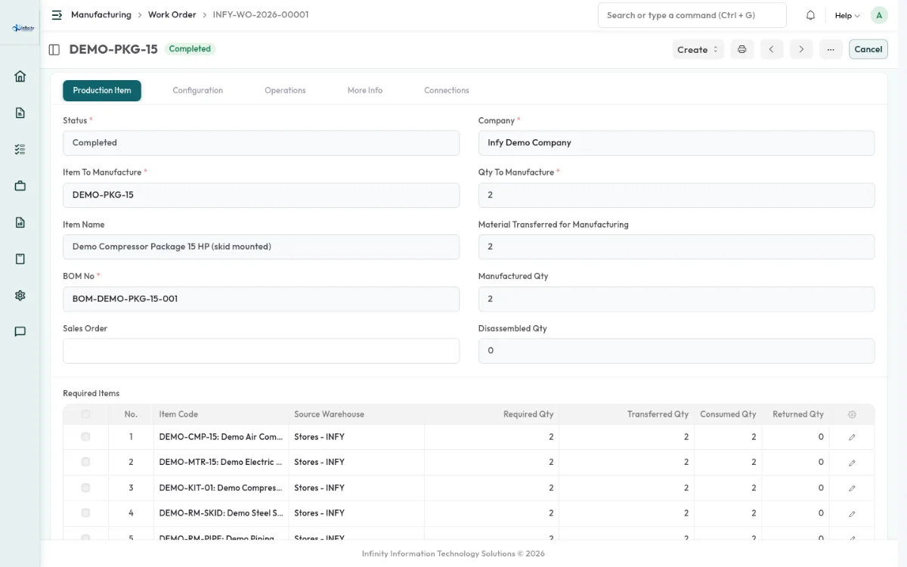